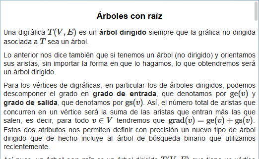

Árboles y algoritmos
Árboles y algoritmos
 Árboles y algoritmos
Árboles y algoritmos
Repasar conceptos básicos y mencionar algunas aplicaciones de la teoría de gráficas. Introducir los árboles, trabajar algunos ejemplos y conocer algoritmos para determinar árboles recubridores de peso máximo y peso mínimo asociados a gráficas conexas sin lazos.
Presentamos un vídeo con información histórica que hace énfasis en los problemas reales que dieron lugar al nacimiento de la teoría de gráficas y en aplicaciones concretas que impulsaron su desarrollo inicial.
Para iniciar recordamos conceptos básicos de la teoría de gráficas, los cuales explicamos y comentamos de manera sencilla. A continuación invitamos a realizar una actividad de manipulación manual de una digráfica y un de una gráfica. Concluimos mencionando aplicaciones genéricas de esta teoría y la importancia de los árboles dentro de la misma.
Consta de tres secciones:

Presentamos vídeos, con explicaciones muy claras, sobre el algoritmo de Kruskal y el algoritmo de Prim.
| Diseño del contenido | Elsa Sirenia Vega Camacho |
| Diseño funcional | Elsa Sirenia Vega Camacho |
| Programación | Elsa Sirenia Vega Camacho |
| Asesoría de programación | Juan José Rivaud Gallardo |
| Diseño gráfico | Ricardo López Gómez |
| Coordinación | Leticia Montserrat Vargas Rocha |
| Diseño funcional | Elsa Sirenia Vega Camacho |
| Programación | Elsa Sirenia Vega Camacho |
| Asesoría de programación |
Leticia Montserrat Vargas Rocha Oscar Escamilla González |
| Diseño gráfico | Francisco Varela Fuentes |
| Coordinación | Leticia Montserrat Vargas Rocha |
| Desarrollo del contenedor | Oscar Escamilla González |
Los contenidos de esta unidad didáctica interactiva están bajo una licencia Creative Commons Reconocimiento-NoComercial-CompartirIgual.
La unidad didáctica fue creada con Arquímedes, una herramienta de código abierto.
La unidad didáctica contiene escenas elaboradas con Descartes, una herramienta de código abierto.
LITE - UnADM 2014